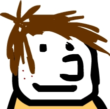

|
Welcome to the Math Emporium
Just remember!Today at the Math Empo, we will use some of the same mathematics that Dr. Camacho uses to treat diseases of the eye. Be sure to ask the KTU volunteers any questions that you may have during the afternoon. With all of these computers around we want to keep the Empo clean. Please throw out any food or uncovered drinks that you may have with you in the Empo. Please remember to stay seated, do not run inside the Empo, and keep your voices down. |
|
Interactive Eye Disease Labs
Click on the image above to begin. Follow the directions given by the volunteers to experiment with the "Untreated Patient" & "Treated Patient" labs.In this section of the KTU hands-on activity, you will learn more about how math can help us to treat eye diseases and to lead healthier lives. Be sure to ask the KTU volunteers any questions that you may have during the afternoon! |